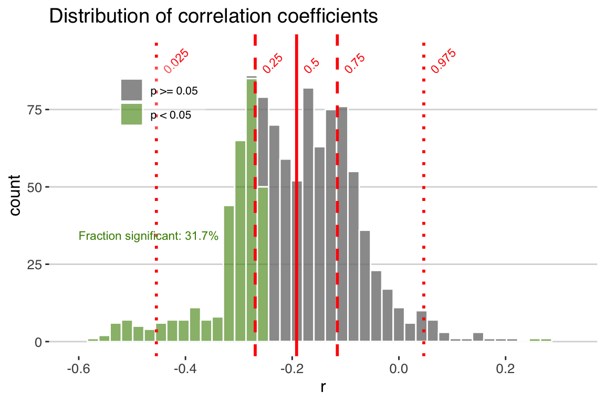

Chapter 5 Time-uncertain correlation
Correlation is perhaps the most commonly used statistical tool in the paleogeosciences. This makes sense, because we often see similar patterns between datasets, but want to know whether the apparent relationship is robust, or could be spurious. And of course, age uncertainty can have immense impacts on correlation.
In this chapter, we’ll explore the time-uncertain correlation tools in geoChronR by walking through a classic comparison in paleoclimatology, the relationship between \(\delta^{18}\)O variability in Greenland ice cores and Asian speleothems.
On multi-millennial timescales, the two datasets display such similar features that the well-dated Hulu Cave record, and other similar records from China and Greenland, have been used to argue for atmospheric teleconnections between the regions and support the independent chronology of GISP2 (Wang et al. 2001).
Here, we revisit this relation quantitatively, using ensemble age models and the corEns function, to calculate the impact of age uncertainty on the correlation between these two iconic datasets.
It’s worth noting at this point that there is a long and detailed discussion in the literature discussing this relationship, and any correlation approach to address this question ignores aspects of the science, and ignores ancillary evidence that may support a mechanistic relationship between two timeseries.
Nevertheless, this is a good example of how age uncertainty can affect apparent alignment between two datasets.
library(lipdR)
library(geoChronR)
library(ggplot2)
library(magrittr)
library(egg)5.1 First look
LiPD files for the Hulu Cave speleothem \(\delta^{18}\)O and the GISP2 ice core \(\delta^{18}\)O records are available at x and y. These LiPD files already include age ensembles, so you don’t need to create new age models. Use the skills you learned in Chapters 3 and @(agemodelling) to take a first look at the data.
Hint #1
Use readLipd() to load the data from the lipdverseHint #2
Use mapAgeEnsembleToPaleoData(), and note that there is no depth data in the GISP2 dataset.Hint #3
Use selectData() to pull out the age ensembles and d18O values of interestHint #4
Use plotEnsTimeseriesRibbons() and/or plotEnsTimeseriesLines() to create plots that span a common intervalHint #5
Use the egg package and ggarrange to stack the plots to allow easy comparison.Great! There’s no replacement for actually looking at the data, and lipdR and geoChronR make it possible to do this in just a few lines of code. If you found that exercise difficult, spend some time reviewing Chapters 3 and @(agemodelling).
Exercise 5.2 Now that you’ve made the overview figure, does it look like there might be a relationship between these datasets? Would you expect the a positive, negative, or zero correlation?
5.2 How to correlate responsibly
Before we jump into the details of how to conduct time-uncertain correlation in R, let’s review some of the key assumptions, methods and choices. The following is an excerpt from the geoChronR paper in Geochronology (McKay, Emile-Geay, and Khider 2021).
Correlation is the most common measure of a relationship between two variables \(X\) and \(Y\). Its computation is fast, lending itself to ensemble analysis, with a handful of pretreatment and significance considerations that are relevant for ensembles of paleoenvironmental and geoscientific data. geoChronR implements three methods for correlation analysis: Pearson’s product-moment, Spearman’s rank and Kendall’s tau. Pearson correlation is the most common correlation statistic, but assumes normally-distributed data. This assumption is commonly not met in paleoenvironmental or geoscientific datasets, but can be can be overcome by mapping both datasets to a standard normal distribution prior to analysis Emile-Geay and Tingley (2016). Alternatively, the Spearman and Kendall correlation methods are rank-based, and do not require normally distributed input data, and are useful alternatives in many applications.
5.2.1 Binning
All correlation analyses for timeseries are built on the assumption the datasets can be aligned on a common timeline. Age-uncertain data violate this assumption. We overcome this by treating each ensemble member from one or more age uncertain timeseries as valid for that iteration, then “bin” each of the timeseries into coeval intervals. The “binning” procedure in geoChronR sets up an interval, which is typical evenly spaced, over which the data are averaged. Generally, this intentionally degrades the median resolution of the timeseries, for example, a timeseries with 37-year median spacing could be reasonably “binned” into 100- or 200-year bins. The binning procedure is repeated for each ensemble member, meaning that between different ensembles, different observations will be placed in different bins.
5.2.2 Autocorrelation
Following binning, the correlation is calculated and recorded for each ensemble member. The standard way to assess correlation significance is using a Student’s T-test, which assumes normality and independence. Although geoChronR can overcome the normality requirement, as discussed above, paleoenvironmental timeseries are often highly autocorrelated, and not serially independent, leading to spurious assessments of significance (Hu, Emile-Geay, and Partin 2017). geoChronR addresses this potential bias using three approaches:
The simplest approach is to adjust the test’s sample size to reflect the reduction in degrees of freedom due to autocorrelation. Following Dawdy and Matalas (1964), the effective number of degrees of freedom is \(\nu = n \frac{1-\phi_{1,X}\phi_{1,X}}{1+\phi_{1,X}\phi_{1,X}}\), where \(n\) is the sample size (here, the number of bins) and where \(\phi_{1,X}, \phi_{1,X}\) are the lag-1 autocorrelation of two time series \(X\), \(Y\), respectively. This approach is called ``effective-n’’ in geoChronR. It is an extremely simple approach, with no added computations by virtue of being a parametric test using a known distribution (\(t\) distribution). A downside is that the correction is approximate, and can substantially reduce the degrees of freedom (Hu, Emile-Geay, and Partin 2017), to less than 1 in cases of high autocorrelation, which is common in paleoenvironmental timeseries. This may result in overly conservative assessment of significance, so this option is therefore not recommended.
A parametric alternative is to generate surrogates, or random synthetic timeseries, that emulate the persistence characteristics of the series. This “isopersistent” test generates \(M\) (say, 500) simulations from an autoregressive process of order 1 (AR(1)), which has been fitted to the data. These random timeseries are then used to obtain the null distribution, and compute p-values, which therefore measure the probability that a correlation as high as the one observed (\(r_o\)) could have arisen from correlating \(X\) or \(Y\) with AR(1) series with identical persistence characteristics as the observations. This approach is particularly suited if an AR model is a sensible approximation to the data, as is often the case (Ghil et al. 2002). However, it may be overly permissive or overly conservative in some situations.
A non-parametric alternative is the approach of Ebisuzaki (1997), which generates surrogates by scrambling the phases of \(X\) and \(Y\), thus preserving their power spectrum. To generate these “isospectral” surrogates, geoChronR uses the
make_surrogate_datafunction from the rEDM package (Park et al. 2020). This method makes the fewest assumptions as to the structure of the series, and its computational cost is moderate, making it the default in geoChronR.
5.2.3 Test multiplicity
In addition to the impact of autocorrelation on this analysis, repeating the test over multiple ensemble members raises the issue of test multiplicity (Ventura, Paciorek, and Risbey 2004), also known as the “look elsewhere effect.” To overcome this problem, we control for this false discovery rate (FDR) using the simple approach of Benjamini and Hochberg (1995), coded in R by Ventura, Paciorek, and Risbey (2004). FDR explicitly controls for spurious discoveries arising from repeatedly carrying out the same test. At a 5% level, one would expect a 1000 member ensemble to contain 50 spurious “discoveries” – instances of the null hypothesis (here “no correlation”) being rejected. FDR takes this effect into account to minimize the risk of identifying such spurious correlations merely on account of repeated testing. In effect, it filters the set of “significant” results identified by each hypothesis test (effective-N, isopersistent, or isospectral).
5.3 The corEns() function
Now that you’ve thoroughly reviewed the theory, lets make it run in geoChronR! I know that not everyone thoroughly reviewed the theory. That’s ok, but it’s worth reflecting on these choices, because you won’t fully understand your results unless you understand these details. The default choices in geoChronR will not be right for every application.
Let’s take another look at the the two timeseries over the period of overlap.
To calculate age uncertain correlation let use geoChronR’s corEns function.
I’m going to run this with 1000 ensemble members, but you may want to run it with only 200 ensemble members for now, since we have multiple significance testing options turned on and it can be a little slow.
corout <- corEns(time.1 = gisp2.ae,
values.1 = gisp2.d18O,
time.2 = hulu.ae,
values.2 = hulu.d18O,
bin.step = 200,
max.ens = 1000,
isopersistent = TRUE,
isospectral = TRUE,
gaussianize = TRUE)Hopefully, some of those options look familiar (see 5.2 if they don’t). There are a lot of choice that go into time uncertain correlation, meaning that there are a lot of parameters available for the corEns function (check out the help at ?corEns).
Some of the key ones to pay attention to are:
bin.step This variable sets the size of the bins that the data will be averaged into to align before correlation. Smaller bins will focus allow examination of shorter timescales, and increase the the sample size, but also increase the number of empty bins, and tend to increase autocorrelation. The right bin size varies depends on the distribution of resolutions in your datasets.
isopersistent and isospectral These need to be set to TRUE if you want to calculate null significance models for significance testing with these methods. On the other hand, turning it off will speed up calculation if you don’t need it.
gaussianize You’ll find the gaussianize option throughout geoChronR, and it’s typically the default option.
gaussianizewill transform the data into a Gaussian distribution, recognizing that many of the methods and/or their significance testing assume that the input data are normally distributed. This options ensures that this is the case.
corEns returns a list that has the key correlation and significance results for all the selected methods.
If percentiles are provided to corEns, and they are by default, the function will output a data.frame that summarizes the output.
corout$cor.stats## # A tibble: 5 x 6
## percentiles r pSerial pRaw pIsopersistent pIsospectral
## <dbl> <dbl> <dbl> <dbl> <dbl> <dbl>
## 1 0.025 -0.454 0.117 0.000434 0.00000562 0.0279
## 2 0.25 -0.269 0.389 0.0337 0.0414 0.189
## 3 0.5 -0.192 0.544 0.145 0.155 0.382
## 4 0.75 -0.115 0.722 0.368 0.389 0.614
## 5 0.975 0.0466 0.959 0.859 0.894 0.9375.4 Plotting the ensemble correlation results
This gives us a first order sense of the results, but let’s use the plotCorEns function to dig in deeper.
raw <- plotCorEns(corout,
significance.option = "raw",
use.fdr = FALSE)+ggtitle("Distribution of correlation coefficients")
print(raw)
Exercise 5.3 Explore the plotting options for plotCorEns.
- Change the color scheme
- Move the legend
- Move the labels
- Change which quantiles are plotted (this one is tricky)
5.4.1 Significance testing options
In this figure we see the distribution of correlation coefficients, and their significance. Note that we chose “significance.option = ‘raw’,” so in green we see the distribution of significant correlations as determined by a standard T-test, without any consideration of autocorrelation. In this case, we observe that 31.7% of the correlations are significant. Of course we know this is a very simplistic approach, and that with many paleoclimate datasets we must consider the impact of temporal autocorrelation, which can readily cause spurious correlations. geoChronR addresses this point using three approaches, as discussed above in detail, and summarized here:
The simplest approach (“eff-n”) is to adjust the test’s sample size to reflect the reduction in degrees of freedom due to autocorrelation.
Alternatively, the “isopersistent” option will generate surrogates, or random synthetic timeseries, that emulate the persistence characteristics of the series, and use those to estiamte significance.
The final option, “isospectral” also generates surrogates to estimate significance, but does so by scrambling the spectral phases of the two datasets, thus preserving their power spectrum while destroying the correlated signal.
Let’s take a look at each of these three options.
Exercise 5.4 Create three more versions of the correlation ensemble histogram, so that you have the original and one for all three options for accounting for autocorrelation. Label them, and combine them into a single plot.
Which option shows the biggest reduction in significant correlations? Which is the most similar to the unadjusted distribution?
If you put your plot together properly, you now see the dramatic effect of accounting for serial autocorrelation in our significance testing. Using the “effective-N” method drops the percentage of significant correlations (at the 0.05 level) to 0. However when autocorrelation is large, this approach dramatically reduces the effective degrees of freedom and has been shown to be overly conservative in many cases. So let’s take a look at the surrogate-based approaches.
Using the “isopersistent” approach, where we simulate thousands of synthetic correlations with the same autocorrelation characteristics as the real data, and see how frequently we observe r-values at the observed levels, gives a much less conservative result.
In the isospectral test, only a few of the ensembles members are significant. This approach often serves as a compromise between the more conservative effective-N approach and the more liberal isopersistent approach. The isospectral method also makes the fewest assumptions as to the structure of the series, and its computational cost is moderate, and so it is the default in geoChronR.
5.4.2 False-discovery rate testing
Although taking advantage of the age ensembles allows us to propagate the impacts of age uncertainty, it introduces another statistical problem on our hands. In addition to the impact of autocorrelation on this analysis, repeating the test over multiple ensemble members raises the issue of test multiplicity (Ventura, Paciorek, and Risbey 2004), or the “look elsewhere effect.”
At a 5% significance level, one would expect a 1000 member ensemble to contain 50 spurious “discoveries” – instances of the null hypothesis, here “no correlation” being rejected.
To overcome this problem, we control for this false discovery rate (FDR) using the simple approach of Benjamini and Hochberg (1995), coded in R by Ventura, Paciorek, and Risbey (2004).
FDR takes this effect into account to minimize the risk of identifying such spurious correlations merely on account of repeated testing.
In effect, it filters the set of “significant” results identified by each hypothesis test (effective-N, isopersistent, or isospectral).
Let’s plot the results of the isopersistent test again, but turn the use.fdr option to TRUE.
isoPersistentFdr <- plotCorEns(corout,
legend.position =c(.85,.8),
f.sig.lab.position = c(.85,.6),
significance.option = "isopersistent",
use.fdr = TRUE)+ggtitle("Isopersistent significance testing with FDR")
print(isoPersistentFdr)
Now we see how accounting for FDR can further reduce our significance levels. In this case many of the significant correlations are expected due to test multiplicity (shown in the green bars in the plot above). This represents the randomness that we’re sampling by repeating the correlation across 1000 ensemble members. After accounting for this, only 33.6% of the ensemble members are significant.
Note that accounting for False Discovery Rate is a separate process than deriving p-values, and can be applied to any of the significance.options in geoChronR.
5.5 Judging the overall significance of an age-uncertain correlation
So, with all of the methods, only a small subset of the correlations are significant, so it’s probably fair to say to that this is not a significant correlation after accounting for age uncertainty. But this begs the question, what fraction of the correlation ensemble needs to be significant to consider an age-uncertain relation significant? There is no hard and fast theoretical justification for what fraction of ensemble correlation results should be expected to pass such a significance test, and so evaluating the significance of age uncertain correlation remains somewhat subjective. Indeed, two truly correlated timeseries, when afflicted with age uncertainty, will commonly return some fraction of insignificant results when random ensemble members are correlated against each other. The frequency of these “false negatives” depends on the structure of the age uncertainties and the timeseries, and will vary to some extent by random chance. One way to get a sense of the vulnerability of a timeseries to false negatives is to perform an age-uncertain correlation of a dataset with itself.
Exercise 5.5 Calculate the correlation ensemble where you correlate the Hulu Cave \(\delta^{18}\)O record with itself, and plot a histogram of the results. Use the isospectral method to quantify significance, while accounting for FDR.
Repeat this exercise with the GISP2 \(\delta^{18}\)O record.
Make a combined plot, with the axes aligned.
What fraction of significant correlations do you get with this approach for each record? Does one dataset have higher self-correlations that the other? Explore the data to think what might cause this?
5.6 Chapter Project
Generally, age uncertainties obscure relationships between records, while in rare cases creating the appearance of spurious correlations. It is appropriate to think of ensemble correlation as a tool to explore the age-uncertain correlation characteristics between timeseries, rather than a binary answer to the question “Are these two datasets significantly correlated?”
So for your chapter project, we’ll explore one more parameter that will have significant impacts on your result.
Exercise 5.6 OK, let’s go through the whole exercise of comparing two time-uncertain series. This time, we’re going to look on a shorter timescale, just the past 2000 years. Your project is to conduct an age-uncertain correlation of two ice core d18O records, from the Renland and Crete ice cores. LiPD data with age ensembles are available for Renland and Crete. You’ll need to go through the whole process explored in this chapter, but once you’ve produced an age uncertain correlation, explore the impact of changing the bin.step over a range of reasonable choices. How do larger (and smaller) bins affect the correlation, and the significance of the result? Defend the choice that you think is most reasonable.